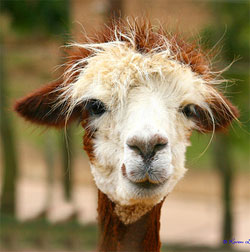

Although early writers compared llamas to sheep, their similarity to the camel was soon recognized. They were included in the genus Camelus along with alpaca in the Systema Naturae (1758) of Linnaeus.[5] They were, however, separated by Cuvier in 1800 under the name of llama along with the guanaco.[citation needed] Alpacas and vicuñas are in genus Vicugna. The genera Lama and Vicugna are, with the two species of true camels, the sole existing representatives of a very distinct section of the Artiodactyla or even-toed ungulates, called Tylopoda, or "bump-footed," from the peculiar bumps on the soles of their feet. The Tylopoda consists of a single family, the Camelidae, and shares the order Artiodactyla with the Suina (pigs), the Tragulina (chevrotains), the Pecora (ruminants), and the Cetancodonta (hippos and cetaceans, which belong to Artiodactyla from a cladistic if not traditional standpoint). The Tylopoda have more or less affinity to each of the sister taxa, standing in some respects in a middle position between them, sharing some characteristics from each, but in others showing special modifications not found in any of the other taxa.[citation needed]
The 19th century discoveries of a vast and previously unexpected extinct Tertiary fauna of North America, as interpreted by palaeontologists Leidy, Cope, and Marsh, aided understanding of the early history of this family.[citation needed] Llamas were not always confined to South America; abundant llama-like remains were found in Pleistocene deposits in the Rocky Mountains and in Central America. Some of the fossil llamas were much larger than current forms. Some species remained in North America during the last ice ages. North American llamas are categorized as a single extinct genus, Hemiauchenia. Llama-like animals would have been a common sight in 25,000 years ago, in modern-day California, Texas, New Mexico, Utah, Missouri, and Florida.[citation needed]
The camelid lineage has a good fossil record. Camel-like animals have been traced from the thoroughly differentiated modern species back through early Miocene forms. Their characteristics became more general, and they lost those that distinguished them as camelids; hence they were classified as ancestral artiodactyls.[citation needed] No fossils of these earlier forms have been found in the Old World, indicating that North America was the original home of camelids, and that Old World camels crossed over via the Bering land bridge. The formation of the Isthmus of Panama three million years ago allowed camelids to spread to South America as part of the Great American Interchange, where they evolved further. Meanwhile, North American camelids died out at the end of the Pleistocene.